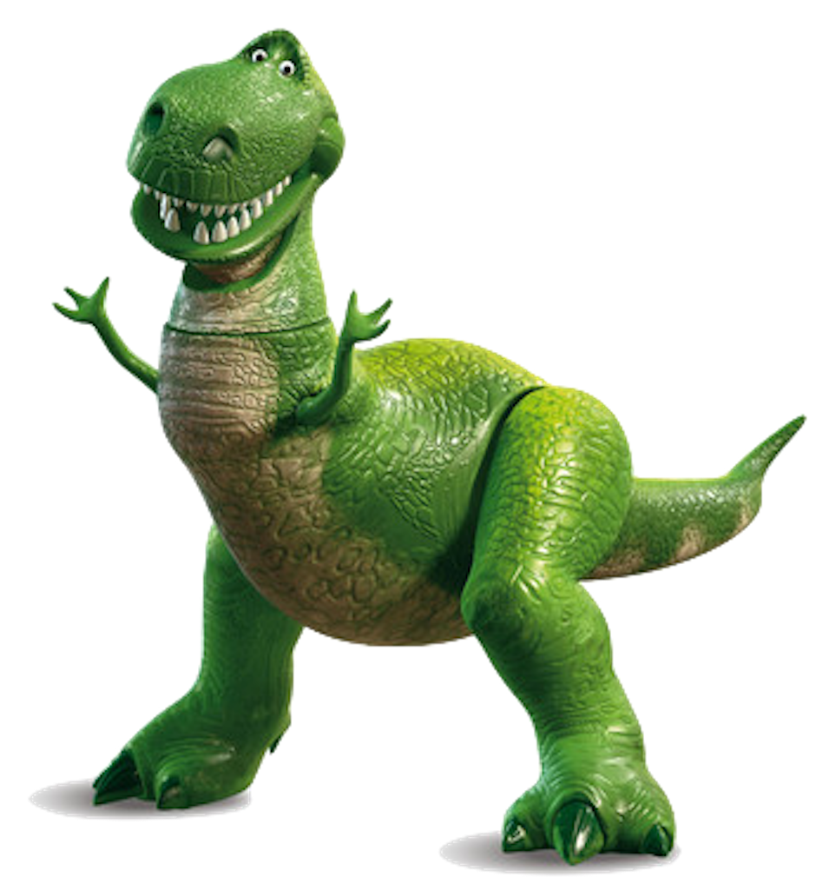

Now, I have managed to break through my sluggish, depressed state and become someone that I am beginning to be proud of. I have managed to focus on my schoolwork and my athletics better since something clicked in quarantine and I physically feel the most fit and the best I have ever felt. Now that we are starting to escape the confinements of our homes to begin doing some social events and gatherings, I am able to walk out of my house confidently, knowing how much of a better individual I have become since March 12, 2020.
 Rex has always been a character that I love simply because of his energetic personality. Even though he is not the favorite, and is not always played with, he holds his head up and does all he can to help the other toys. He is a fun character that always looks for the best in others, but is also very protective of his friends. Although he is a t-rex, he does not let that define him and is a good guy.